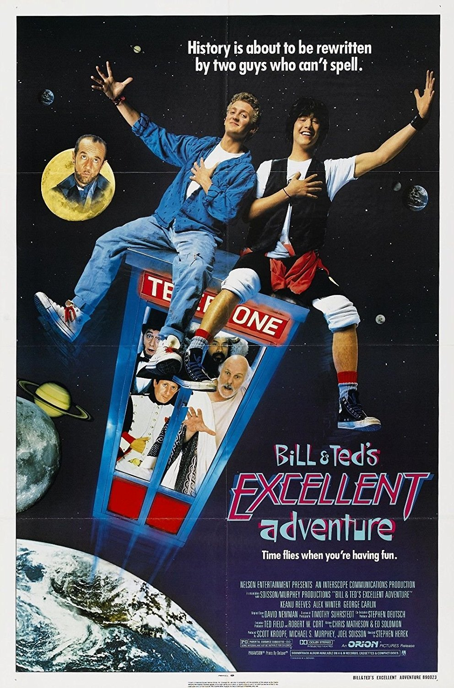

Bill & Ted's Excellent Adventure

- Release date : February 17th, 1989
- Run time : 1 hour, 30 minutes
- Rating: PG
Bill & Ted's Excellent Adventure sees Bill S. Preston Esq. and Theodore Logan about to fail out of high school. The "Wyld Stallyns" bandmates have just one chance to pass, a history report due in the coming days. While trying to make a plan to pass this report, they are visited by a man named Rufus, with a time machine. Their only chance to not fail out of school, and save their friendship, is to go through history gathering the most famous figures for one excellent report.
Josh's notes: I started watching this movie just to have on in the background, but it didn't stay that way for long. The most family friendly of the movies on this site, Bill & Ted's Excellent Adventure is a comedy across history, with the main character's shenanigans being strong enough to make anybody crack a smile. It's a different move than most of the ones Keanu does, but it is still a very good movie. Overall 7.5-8/10 movie.